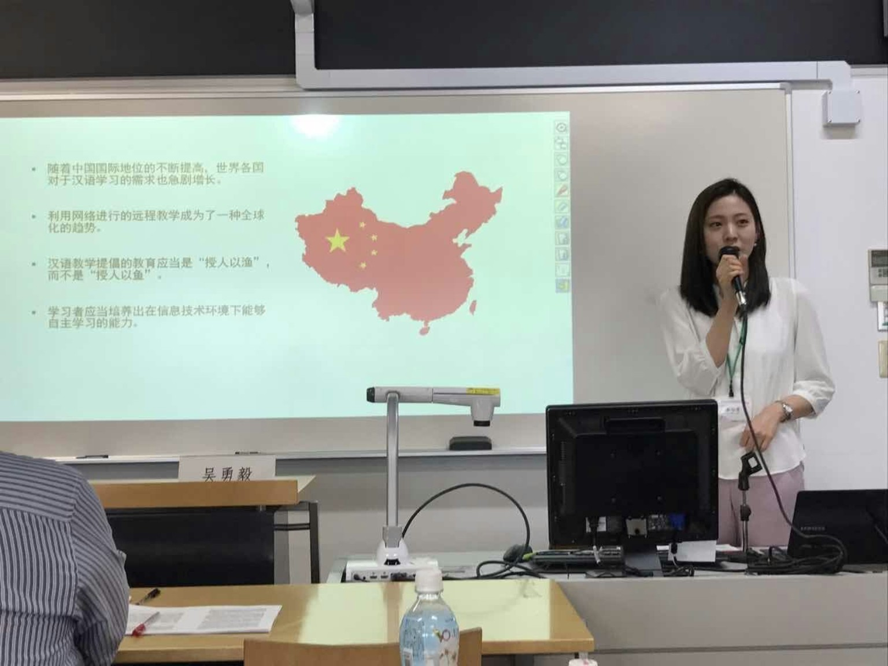
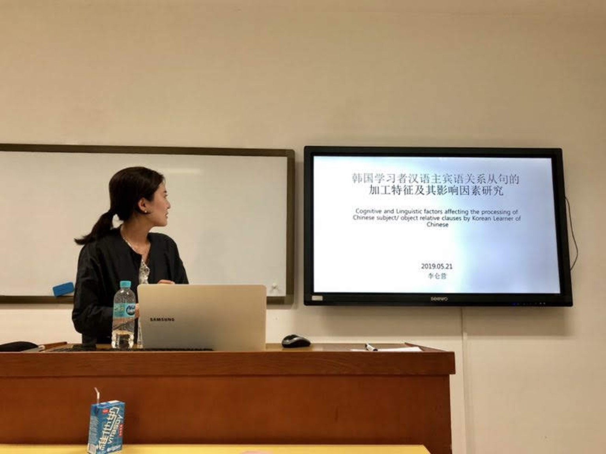

Platform Overview
Chinese Flow Lab은 AI 기반 중국어 학습 및 연구 플랫폼입니다. 본 플랫폼은 학습자의 진단 결과와 오류 유형을 기반으로 맞춤형 연습문제를 제공하는 Learning Track과, 학습자의 프롬프트·AI 생성 결과·초안·수정안·최종 산출물을 단계적으로 수집하고 분석하는 Research Track으로 구성되어 있습니다.
Two-Track Structure
Learning Track
사전 진단, 학습 프로필, 플립드러닝 영상, 맞춤형 연습문제를 통해 학습자의 중국어 듣기·쓰기 학습을 지원합니다.
Research Track
프롬프트, AI 생성 결과, 초안, 수정안, 최종안을 축적하여 중국어 학습자의 의미 구성 과정과 작문 발달을 연구합니다.
Teaching & Research Scenes


